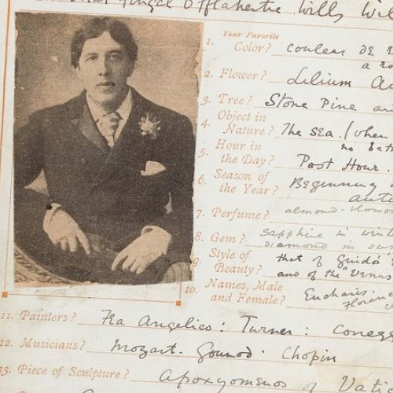

| Фотографии | |
|---|---|
|
Посвящение Оскара Уайльда в книге посетителей Кайро.
«Только пустые люди не судят по внешним признакам. Тайна мироздания заключена в видимом, но не в сокрытом. Моему другу Кайро, ноябрь 92 г. Оскар Уайльд». |
|
|  | Во время учёбы в Оксфорде, в 1877 году, Оскар Уайльд так отвечал на вопросы в анкете авторской рукописи «Признания во вкусах, привычках и убеждениях». |
| Слева направо: Оскар Уайльд и лорд Альфред Дуглас, 1893 год. | |
| Оскар Уайльд, фотография, сделанная Наполеоном Сарони (около 1882 года). | |
| Снимок отрывка Дориана Грея, опубликованный в ежемесячном журнале Lippincotts за 1890 год. | |
| Оскар Уайльд в образе Нарцисса, Томас Наст, 1894 год. | |